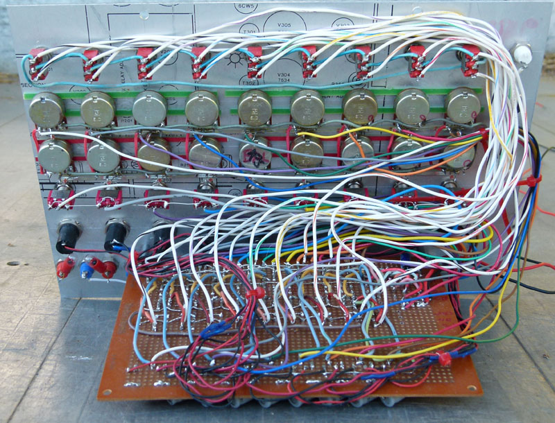
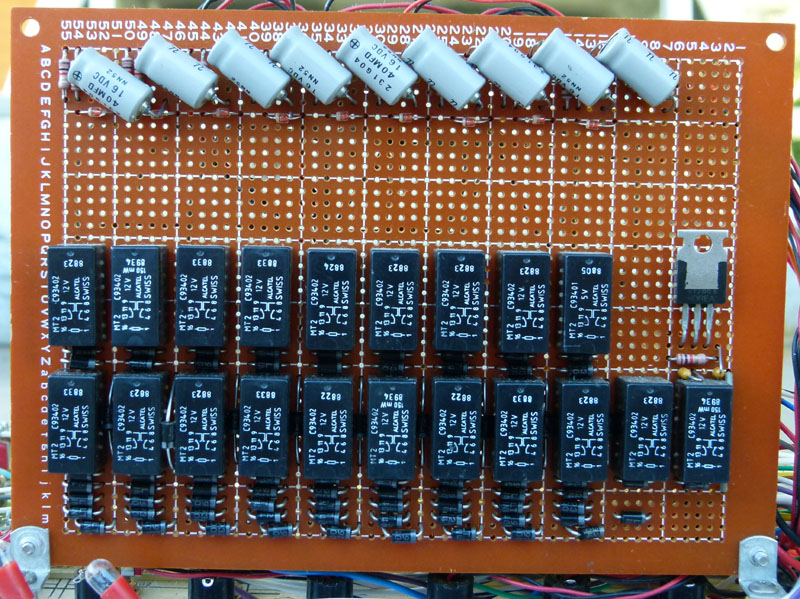

|
Sequencer Programmer In keeping with the vintage theme, this is a proposal for a sequencer/programmer.
A nine step sequencer has been prototyped, and works reasonably well. It requires a decent clock signal to step correctly. A noisy singal can cause skipping, or in some cases, cause the step to be lost, resulting in no stages being active. To run shorter sequences, individual steps can be deactivated using the "skip" switches. When operating as a programmer, push any button, and that relay latches in, and the others all release - basically your one-of-many latching switch bank. This can easilly be constructed using 12 volt relays, 1N4001 (or better) power diodes and 12 volt lamps. Make sure you are running the correct voltage for the relays. Running this from +15 volts will over-saturate (magnetize) the cores of the relays, making them stay latched for a while after power has been removed. All trigger and set inputs are +12 volts and should be of sufficient current to close a relay. Do not expect this to function from the gate outputs of a solid state synthesizer.
 
A note to readers: this circuitry is intended for the more advanced builder. Because high voltages are used, a shock hazard exists. We do NOT recommend that the novice DIY musician try to construct this synthesizer. Some experience with tube electronics is highly recommended.
Audio Synthesis via Vacuum Tubes Home
|